Lecture 13 — Part 5.1 Generative Models
ทุกบทก่อนหน้านี้สอนโมเดลที่ ตอบคำถาม เช่น รูปนี้เป็นแมวไหม ประโยคนี้บวกหรือลบ บทนี้กลับด้าน คือสอนโมเดลที่ สร้างของใหม่ เช่น รูปเสื้อที่ไม่เคยมีใน dataset หรือหน้าคนที่ไม่มีตัวตนจริง เครื่องมือทั้งสามแบบในบทนี้ใช้ CNN จาก Lesson 7 ทั้งหมด ของใหม่มีแค่สองอย่าง คือ layer ที่ขยายรูปกลับ (Conv2DTranspose) และวิธีตั้ง loss ให้โมเดลยอมสร้างของที่ไม่มีคำตอบตายตัว
| Autoencoder | VAE | GAN | |
|---|---|---|---|
| ภาพในหัว | ย่อรูปเหลือ 2 ตัวเลข แล้วขยายกลับ | ย่อเป็น "ก้อน" μ, σ แทนจุด แล้วสุ่มจุดในก้อน | ช่างปลอมแบงก์ แข่งกับตำรวจตรวจแบงก์ |
| loss | reconstruction | reconstruction + KL | binary cross-entropy สองจังหวะ |
| สร้างรูปใหม่ได้ดีไหม | ไม่ดี latent space มีช่องโหว่ | ได้ latent ต่อเนื่อง แต่รูปเบลอกว่า | รูปคมสมจริง แต่ฝึกยาก |
| อ่านที่ | ตอน 2 | ตอน 3 | ตอน 4, ตอน 5 |
เด็กดูรูปม้ามาหลายร้อยรูป แล้ววาดม้าตัวใหม่ได้ ม้าตัวนั้นไม่ตรงกับรูปไหนเลย แต่ใครเห็นก็รู้ว่าเป็นม้า และถ้าให้วาดอีกรอบก็จะได้ม้าอีกตัวที่ไม่ซ้ำเดิม
Generative model คือ neural network ที่ สร้างข้อมูลออกมาได้ ข้อมูลนั้นคล้าย training data แต่ ยังไม่เคยมีมาก่อน และโมเดลต้องเป็นแบบ ความน่าจะเป็น ไม่ใช่แบบกำหนดแน่นอน (deterministic) เพราะถ้าป้อนเหมือนเดิมแล้วได้รูปเดิมทุกครั้ง ก็เป็นแค่เครื่องจำรูป ไม่ใช่เครื่องสร้าง วิธีที่ทุกโมเดลในบทนี้ใช้ทำให้ผลไม่ซ้ำคือ ป้อน random noise เข้าไปพร้อมกับสิ่งที่เรียนรู้มา noise คนละค่าจึงได้รูปคนละรูป
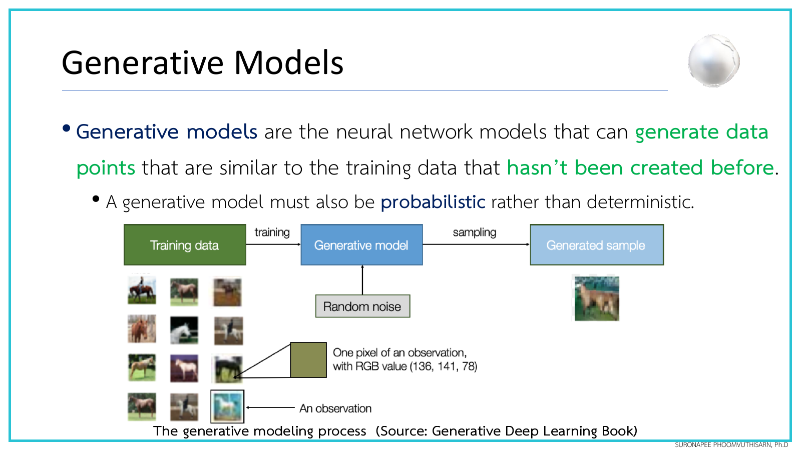
กระบวนการมีสองขั้น ขั้น training โมเดลดูรูปม้าจริงจำนวนมาก รูปหนึ่งรูปคือ observation หนึ่งตัว และแต่ละพิกเซลคือค่า RGB เช่น (136, 141, 78) ขั้น sampling โมเดลรับ random noise แล้วสร้างรูปม้ารูปใหม่ ขั้นที่สองนี้เองที่ทำให้โมเดลต้องเป็นแบบความน่าจะเป็น
"generative" ไม่ได้แปลว่าโมเดลใหญ่หรือเป็นภาษา โมเดลจะเป็น generative ได้ต้องมีสองข้อ คือผลออกมาเป็นข้อมูลชนิดเดียวกับ training data (รูป ข้อความ) และสุ่มได้หลายแบบ โมเดลจำแนกรูปที่ให้ผล "แมว 0.9" ทุกครั้งไม่ใช่ generative
ตัวอย่างนี้มีไว้ให้เห็นว่า ข้อมูลที่มีแบบแผนย่อเหลือไม่กี่ตัวเลขได้ และตัวเลขไม่กี่ตัวนั้นคือสิ่งที่ generative model เรียนรู้
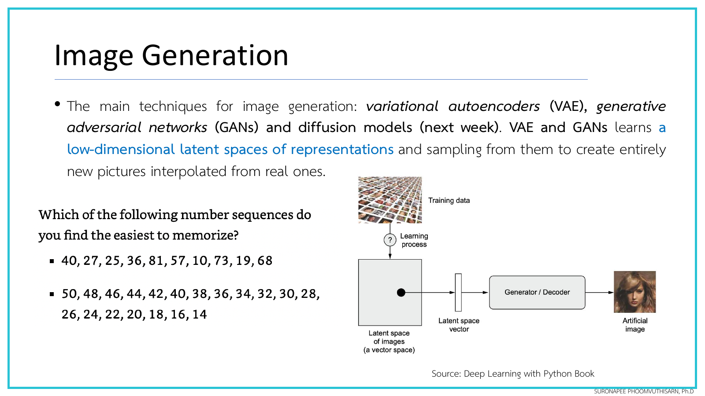
ลำดับแรก 40, 27, 25, 36, 81, … มี 10 ตัวที่ไม่มีแบบแผน ต้องจำทั้ง 10 ตัว ลำดับที่สอง 50, 48, 46, …, 14 ยาวกว่า (19 ตัว) แต่จำง่ายกว่า เพราะจำแค่ "เริ่ม 50 ลดทีละ 2 จนถึง 14" คือจำสามตัวเลขก็สร้างกลับได้ครบ สามตัวเลขนี้คือ latent representation ของลำดับ โมเดลในบทนี้ทำแบบเดียวกันกับรูป: VAE และ GAN เรียนรู้ latent space ที่มีมิติต่ำ แล้วสุ่มจุดจากในนั้นมาสร้างเป็นรูปใหม่
| เทคนิคสร้างรูป | เรียนที่ |
|---|---|
| Variational autoencoder (VAE) | บทนี้ ตอน 3 |
| Generative adversarial network (GAN) | บทนี้ ตอน 4–5 |
| Diffusion model | Lesson 14 |
รูปมี 28 × 28 = 784 ค่า latent มี 2 ค่า ย่อลง 392 เท่า ที่ทำได้เพราะรูปเสื้อผ้ามีแบบแผน (เสื้อ กางเกง รองเท้า) ไม่ใช่พิกเซลสุ่ม
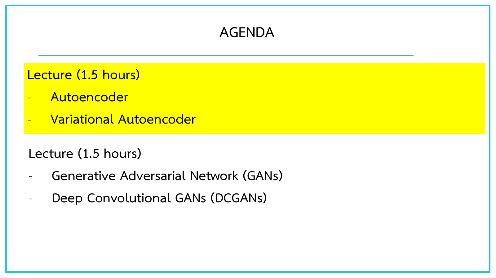
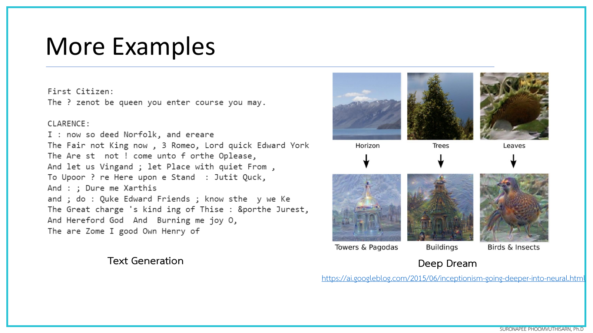
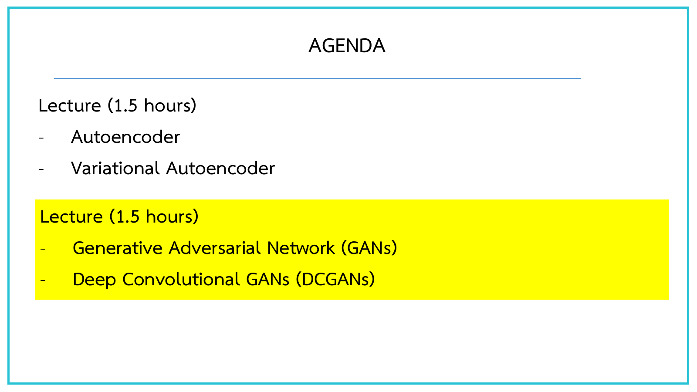
นักหมากรุกมืออาชีพดูกระดานที่มาจากเกมจริงแค่ 5 วินาทีแล้วจัดหมากคืนได้ครบ เพราะเขาไม่ได้จำตำแหน่งหมากทีละตัว เขาจำเป็นรูปแบบที่คุ้นเคย แต่ถ้าวางหมากแบบสุ่ม เขาจำได้ไม่ดีกว่าคนทั่วไป
Autoencoder คือ network ที่ เรียนรู้ representation แบบอัดแน่น หรือ latent representation ของข้อมูลโดยไม่ต้องมี label มีสองส่วน
| ส่วน | หน้าที่ |
|---|---|
| Encoder | อ่าน input แล้วบีบเป็น latent representation |
| Decoder | อ่าน latent representation แล้วสร้าง output ที่ใกล้เคียง input |
สิ่งที่บังคับให้โมเดลเก็บเฉพาะส่วนสำคัญคือ "คอขวด" จำนวน unit ตรงกลางน้อยกว่า input และ output มาก โมเดลจึงลอกพิกเซลตรงๆ ไม่ได้ ต้องเรียนรู้ feature ที่สำคัญที่สุดแทน ส่วนเรื่องไม่ต้องมี label นั้น autoencoder เป็นตัวอย่างของ self-supervised learning เพราะใช้ input ของตัวเองเป็น target คือ fit(x, x)
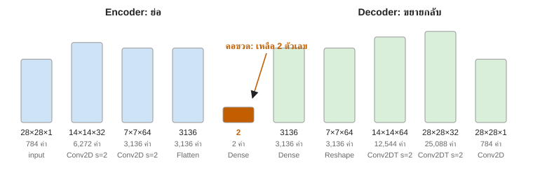
แท่งแต่ละแท่งคือข้อมูลหลังผ่าน layer หนึ่ง ความสูงคือจำนวนค่าในสเกล log ฝั่ง encoder ลดขนาดกว้างยาวทีละครึ่งด้วย stride 2 จนเหลือ 2 ตัวเลข ฝั่ง decoder ทำย้อนกลับจนได้ 28×28×1 เท่าเดิม loss วัดว่ารูปที่ได้กลับมาต่างจากรูปเดิมแค่ไหน
output ของ autoencoder "ใกล้เคียง" input ไม่ใช่เท่ากันทุกพิกเซล ถ้าคอขวดใหญ่เท่า input โมเดลจะลอกพิกเซลตรงๆ ได้ loss ต่ำ แต่ไม่ได้เรียนรู้ feature อะไรเลย
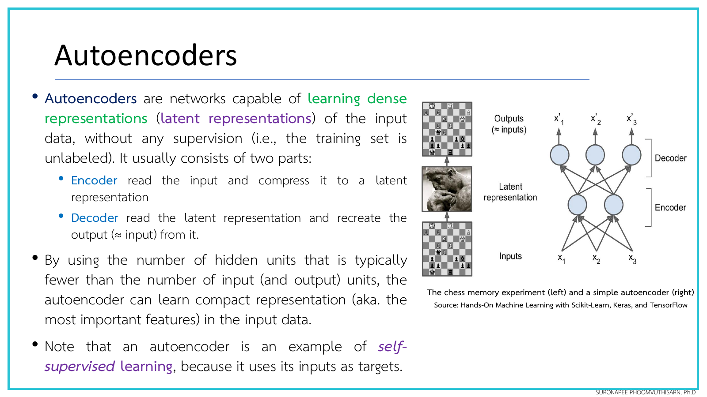
autoencoder อย่างง่ายบนสไลด์มี input 3 ตัว (x₁, x₂, x₃) hidden layer 2 unit เป็นคอขวด และ output 3 ตัวที่พยายามให้เท่ากับ input ใช้หลักเดียวกับรูปขนาดใหญ่ แค่จำนวนน้อยกว่า
Fashion MNIST มีรูปขาวดำ 60,000 รูปสำหรับ train และ 10,000 รูปสำหรับ test ขนาด 28×28 แบ่งเป็น 10 ประเภท (label 0 T-shirt/top ถึง 9 Ankle boot) encoder ย่อรูปเป็น latent 2 มิติ เพื่อให้วาดเป็นจุดบนกราฟได้
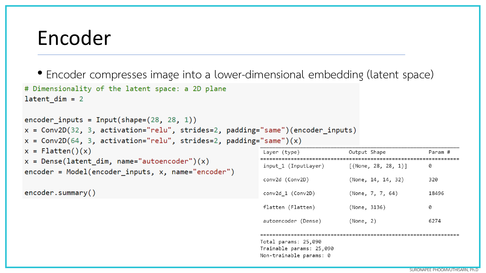
ลองไล่ shape กับจำนวน parameter ด้วยมือ ซึ่งเป็นแบบที่ข้อสอบชอบถาม Conv2D ที่ strides=2, padding="same" ทำให้กว้างยาวลดลงครึ่ง ส่วน parameter ของ Conv2D คือ (kernel × kernel × channel เข้า + 1) × filter
| Layer | Output shape | Parameter |
|---|---|---|
| Input | (28, 28, 1) | 0 |
| Conv2D(32, 3, strides=2) | (14, 14, 32) | (3·3·1 + 1)·32 = 320 |
| Conv2D(64, 3, strides=2) | (7, 7, 64) | (3·3·32 + 1)·64 = 18,496 |
| Flatten | (3136) | 0 (7·7·64 = 3136) |
| Dense(2) | (2) | 3136·2 + 2 = 6,274 |
| รวม | 25,090 | |
รูปกางเกงหนึ่งรูปเข้า encoder ได้ latent = [6.3, −0.9] คือจุดหนึ่งบนระนาบสองมิติ decoder นำจุดนี้ไปสร้างรูปกางเกงกลับมาได้คล้ายเดิม ตัวเลขสองตัวนี้ไม่ได้มีความหมายที่ตั้งชื่อได้ (ไม่ใช่ "ความยาว" หรือ "สี") โมเดลเลือกเองว่าจะใช้แกนแต่ละแกนเก็บอะไร
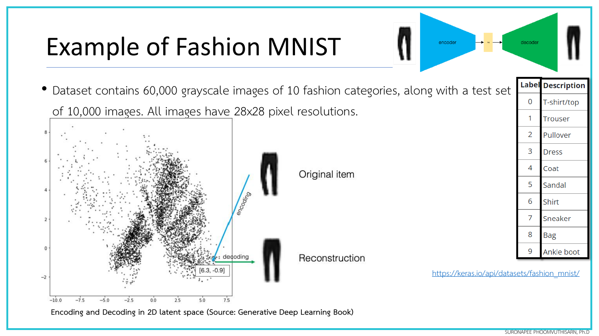
จุดดำแต่ละจุดคือรูป test หนึ่งรูปหลังผ่าน encoder กางเกงที่ encode ได้ [6.3, −0.9] เมื่อ decode กลับได้รูปกางเกงที่ขอบเบลอกว่าต้นฉบับเล็กน้อย เพราะข้อมูล 784 ค่าถูกบีบผ่าน 2 ค่า รายละเอียดเล็กๆ จึงหายไป
encoder คือการพับกระดาษให้เล็กลง decoder คือการคลี่กลับ ต้องคลี่ตามลำดับย้อนกลับ Flatten ย้อนด้วย Reshape และ Conv2D ที่ย่อขนาดย้อนด้วย Conv2DTranspose ที่ขยายขนาด
Conv2DTranspose ขยายรูปด้วยการแทรกศูนย์ระหว่างพิกเซลเดิม (จำนวนช่องศูนย์ที่แทรก = stride − 1) แล้วจึงทำ convolution ตามปกติ เมื่อใช้ padding="same" ขนาดใหม่จึงเท่ากับขนาดเดิมคูณ stride ส่วนจำนวน parameter คิดสูตรเดียวกับ Conv2D
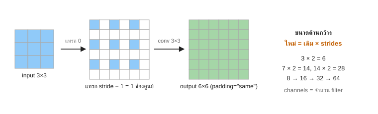
รูป 3×3 ถูกแทรกศูนย์หนึ่งช่องระหว่างทุกพิกเซลจนเป็นตาราง 6×6 แล้ว filter 3×3 เลื่อนผ่านจนได้ output 6×6 ทุกช่องมีค่า กฎ "ใหม่ = เดิม × strides" ใช้ได้กับทุก Conv2DTranspose ในบทนี้ เพราะทุกตัวใช้ padding="same"
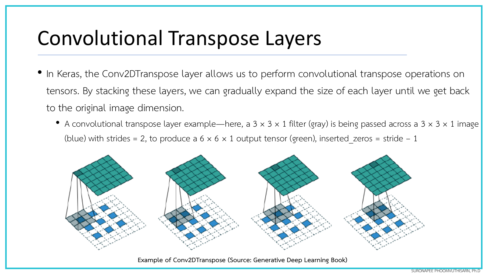
บนสไลด์ filter 3×3×1 เลื่อนผ่านรูป 3×3×1 ที่ stride 2 ได้ output 6×6×1 ซ้อน Conv2DTranspose หลายชั้นก็ขยายทีละสองเท่าจนกลับไปเท่ารูปต้นฉบับ
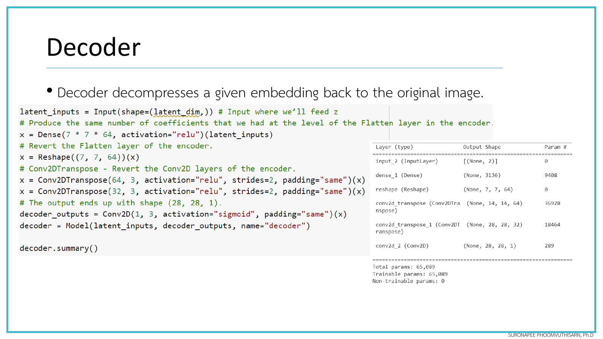
| Layer | Output shape | Parameter |
|---|---|---|
| Input (latent) | (2) | 0 |
| Dense(7·7·64) | (3136) | 2·3136 + 3136 = 9,408 |
| Reshape((7, 7, 64)) | (7, 7, 64) | 0 |
| Conv2DTranspose(64, 3, strides=2) | (14, 14, 64) | (3·3·64 + 1)·64 = 36,928 |
| Conv2DTranspose(32, 3, strides=2) | (28, 28, 32) | (3·3·64 + 1)·32 = 18,464 |
| Conv2D(1, 3, sigmoid) | (28, 28, 1) | (3·3·32 + 1)·1 = 289 |
| รวม | 65,089 | |
Dense ตัวแรกของ decoder ต้องมี 7 × 7 × 64 = 3136 unit เท่ากับขนาดหลัง Flatten ของ encoder เพื่อ Reshape กลับเป็น (7, 7, 64) ได้ ถ้าเลขไม่ตรงกัน Reshape จะ error ส่วน layer สุดท้ายใช้ sigmoid เพราะพิกเซลถูกปรับให้อยู่ระหว่าง 0–1 และ loss เป็น binary cross-entropy layer สุดท้ายใช้ stride 1 (ค่า default) ขนาดจึงคงเป็น 28×28
shape (20, 20, 16) เพราะ 10 × 2 = 20 และ channel เท่ากับจำนวน filter parameter = (3·3·8 + 1)·16 = 73·16 = 1,168
ตัวอย่างนี้มีไว้ให้เห็นว่า autoencoder จัดกลุ่มเสื้อผ้าได้เองทั้งที่ไม่เคยเห็น label แต่วิธีจัดนั้นยังไม่เหมาะกับการสร้างรูปใหม่
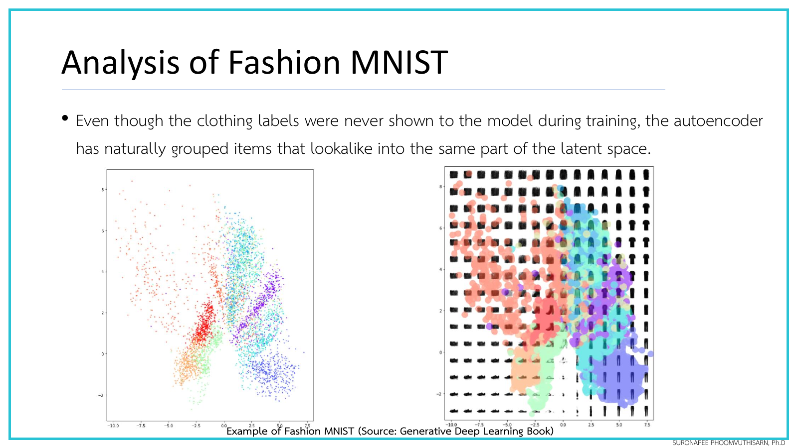
เมื่อระบายสีจุดตาม label ทีหลัง จะเห็นว่าของที่หน้าตาคล้ายกันอยู่ใกล้กัน เช่น รองเท้าแตะ รองเท้าผ้าใบ และบูทอยู่ด้วยกัน เสื้อหลายแบบอยู่อีกกลุ่ม ทั้งที่ label ไม่เคยถูกใช้ตอน train แต่ช่วงของแกนก็ไม่สมมาตร แกนนอนยืดจากประมาณ −10 ถึง 7.5 กลุ่มหนึ่งกระจายกว้างมาก อีกกลุ่มอัดอยู่ในพื้นที่เล็ก และมีช่องว่างระหว่างกลุ่ม
แผนที่เมืองที่บ้านเรือนกระจุกอยู่ไม่กี่ย่าน ระหว่างย่านเป็นทุ่งโล่ง ถ้าปักหมุดสุ่มบนแผนที่ โอกาสสูงที่หมุดจะตกกลางทุ่งซึ่งไม่มีบ้าน
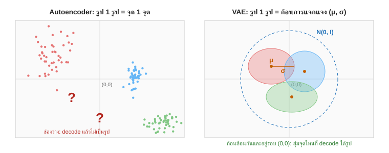
ฝั่งซ้าย autoencoder วางรูปหนึ่งรูปเป็นจุดเดียว กลุ่มอยู่ห่างกันและไม่ได้อยู่รอบ (0, 0) จุดที่สุ่มในช่องว่างจึง decode ออกมาไม่เป็นเสื้อผ้า ฝั่งขวาคือสิ่งที่ VAE ในตอน 3 แก้ไว้ คือแต่ละรูปเป็นก้อนที่ซ้อนกันอยู่ในวง N(0, I)
สไลด์สรุปปัญหาไว้เป็นข้อๆ จัดเป็นตารางได้ดังนี้
| อาการ | สาเหตุ |
|---|---|
| สุ่มจุดใน latent space แล้วอาจได้ ของประเภทเดิม ซ้ำๆ | บางประเภทครองพื้นที่กว้างมาก บางประเภทกินพื้นที่เล็ก |
| รับประกันไม่ได้ว่าจุดที่ decode จะเป็น เสื้อผ้าที่ดูออกว่าเป็นอะไร | มีช่องว่างขนาดใหญ่ที่แทบไม่มีจุด และยิ่งแย่ลงเมื่อ latent มีมิติสูงขึ้น |
| ไม่ชัดว่าจะเลือก จุดสุ่มใน latent space อย่างไร | การแจกแจงของจุดไม่ได้นิยามไว้ ไม่สมมาตรรอบ (0, 0) และไม่มีขอบเขต |
รากของทุกข้อคือ autoencoder ไม่ได้ถูกบังคับให้ latent space ต่อเนื่อง loss ของมันสนใจแค่ว่าสร้างรูปเดิมกลับได้ไหม ไม่สนว่าพื้นที่ระหว่างจุดเป็นอย่างไร
autoencoder train ได้ดีและ reconstruct ได้ชัด แต่ "reconstruct ได้" กับ "สร้างของใหม่ได้" เป็นคนละเรื่อง ข้อสอบมักให้เลือกว่าปัญหาของ autoencoder คืออะไร คำตอบคือ latent space ไม่ต่อเนื่องและไม่มีการแจกแจงที่นิยามไว้ ไม่ใช่ reconstruct ไม่ได้
สีในสมการของตอนนี้: สีฟ้า คือค่าสุ่ม (ε) · สีส้ม คือค่าที่ encoder คำนวณออกมา (μ, log σ²)
แทนที่จะปักหมุดบ้านเป็นจุดเดียว ให้ระบายสีเป็นวงรอบบ้าน วงของบ้านข้างๆ ซ้อนทับกัน ทุกตารางนิ้วบนแผนที่จึงอยู่ในวงของบ้านสักหลัง ปักหมุดตรงไหนก็เจอบ้าน
encoder ของ VAE (Kingma และคณะ, 2013) ไม่ได้ส่งออก latent เป็นจุด แต่แปลงรูปเป็นพารามิเตอร์ของ การแจกแจงความน่าจะเป็น คือ mean μ และ variance σ² แล้วจึงสุ่มจุด z จากการแจกแจงนั้น output จึงขึ้นกับความบังเอิญส่วนหนึ่ง และรูปที่สร้าง ดูเหมือนสุ่มมาจาก training set
จุด z = จุดกลางของก้อน + (ความกว้างของก้อน × ตัวเลขสุ่มมาตรฐาน) ε ทำหน้าที่เป็น noise บอกว่าจะเลื่อนออกจากจุดกลางไปกี่เท่าของ σ
| \(\net{\mu}\) | จุดกลางของก้อน encoder คำนวณจากรูป (ใน code คือ z_mean) |
| \(\net{\sigma}\) | standard deviation ความกว้างของก้อน ได้จาก z_log_var = log σ² |
| \(\rnd{\varepsilon}\) | ตัวเลขสุ่มจาก normal distribution มาตรฐาน (mean 0, sd 1) สุ่มใหม่ทุกครั้ง |
มิติหนึ่งของ latent encoder ให้ μ = 0.5 และ σ² = 0.04 จึงได้ σ = 0.2 ถ้าสุ่มได้ ε = −1.5 จะได้ z = 0.5 + 0.2 × (−1.5) = 0.5 − 0.3 = 0.2 รอบถัดไปสุ่ม ε ใหม่ได้ +1.0 ก็จะได้ z = 0.7 รูปเดิมจึงได้ z ต่างกันทุกครั้ง แต่ส่วนใหญ่อยู่ในช่วง μ ± 2σ = 0.1 ถึง 0.9
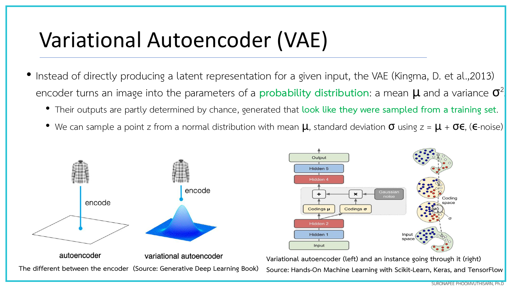
ใน network ของ VAE หลัง hidden layer มีสองหัวคือ codings μ และ codings σ แล้วนำ σ คูณกับ Gaussian noise บวกกับ μ ก่อนส่งต่อให้ decoder ทุกรูปจึงไม่ได้ตกที่จุดเดียว แต่อาจตกที่ใดก็ได้ในวงรอบ μ
สไลด์เขียนว่า encoder ให้ "mean μ และ variance σ²" แต่สูตร z ใช้ σ (standard deviation) ไม่ใช่ σ² ถ้าโจทย์ให้ variance 0.04 ต้องถอดรากเป็น 0.2 ก่อนคูณ ε
VAE สมมติว่ามิติต่างๆ ของ latent ไม่สัมพันธ์กัน covariance matrix จึงเป็นเมทริกซ์ทแยง encoder จึง แปลง input แต่ละตัวเป็น mean vector และ variance vector เท่านั้น ไม่ต้องคำนวณ covariance ระหว่างมิติ ถ้า latent มี 2 มิติ encoder ก็ให้ตัวเลข 2 + 2 = 4 ตัว
แต่ encoder ไม่ได้ให้ variance ตรงๆ มันให้ ลอการิทึมของ variance เหตุผลอยู่ในตารางนี้
| ถ้าให้ encoder ส่งออก | ช่วงค่าที่ต้องได้ | ปัญหา |
|---|---|---|
| σ² ตรงๆ | มากกว่า 0 เท่านั้น | Dense ไม่มี activation ให้ค่าติดลบได้ ซึ่งไม่ใช่ variance |
| log σ² | (−∞, ∞) | ไม่มีปัญหา ตรงกับช่วง output ของ neuron ทั่วไป และ gradient เปลี่ยนอย่างนุ่มนวลกว่า |
ครึ่งหนึ่งของ log σ² คือ log σ ใส่ exp แล้วได้ σ คืนมา ค่า exp เป็นบวกเสมอ σ จึงไม่มีทางติดลบ
ถ้า z_log_var = 0 จะได้ σ = e⁰ = 1 ถ้า z_log_var = 2 จะได้ σ = e¹ ≈ 2.72 ถ้า z_log_var = −2 จะได้ σ = e⁻¹ ≈ 0.37 ค่า z_log_var ติดลบก็ยังได้ σ เป็นบวก
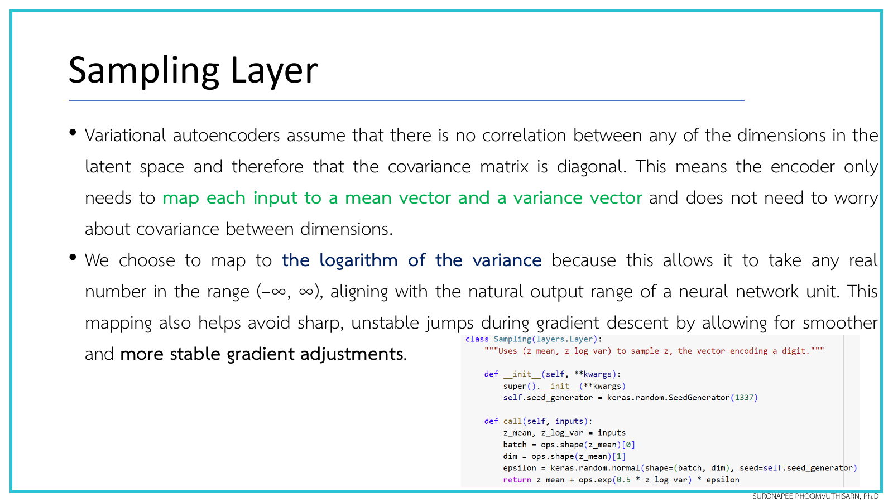
class Sampling(layers.Layer):
def call(self, inputs):
z_mean, z_log_var = inputs
batch = ops.shape(z_mean)[0]
dim = ops.shape(z_mean)[1]
epsilon = keras.random.normal(shape=(batch, dim), seed=self.seed_generator)
return z_mean + ops.exp(0.5 * z_log_var) * epsilonz_mean, z_log_var = inputs | รับ output สองหัวของ encoder แต่ละตัวมี shape (batch, latent_dim) |
batch, dim | อ่านขนาด batch และจำนวนมิติ เพื่อสุ่ม ε ให้ shape เท่ากับ z_mean |
keras.random.normal(...) | สุ่ม ε จาก N(0, 1) ทุกตัวในทุกมิติ |
ops.exp(0.5 * z_log_var) | แปลง log σ² เป็น σ ก่อนคูณ ε |
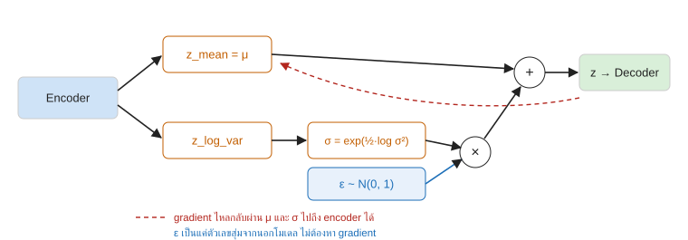
การสุ่มอยู่ที่ ε ซึ่งมาจากนอกโมเดล ส่วน μ และ σ ยังเป็นสูตรคูณและบวกธรรมดา backpropagation จึงหา gradient ของ loss เทียบกับ μ และ σ ได้ แล้วส่งกลับไปปรับ weight ของ encoder ถ้าสุ่ม z จาก N(μ, σ²) ตรงๆ การสุ่มจะขวางทาง gradient การแยกความสุ่มออกเป็น ε แบบนี้เรียกว่า reparameterization trick
โค้ดใช้ exp(0.5 * z_log_var) ไม่ใช่ exp(z_log_var) ถ้าลืม 0.5 จะได้ σ² แทน σ และ Sampling layer ไม่มี weight ที่เรียนได้ parameter ใน summary จึงเป็น 0
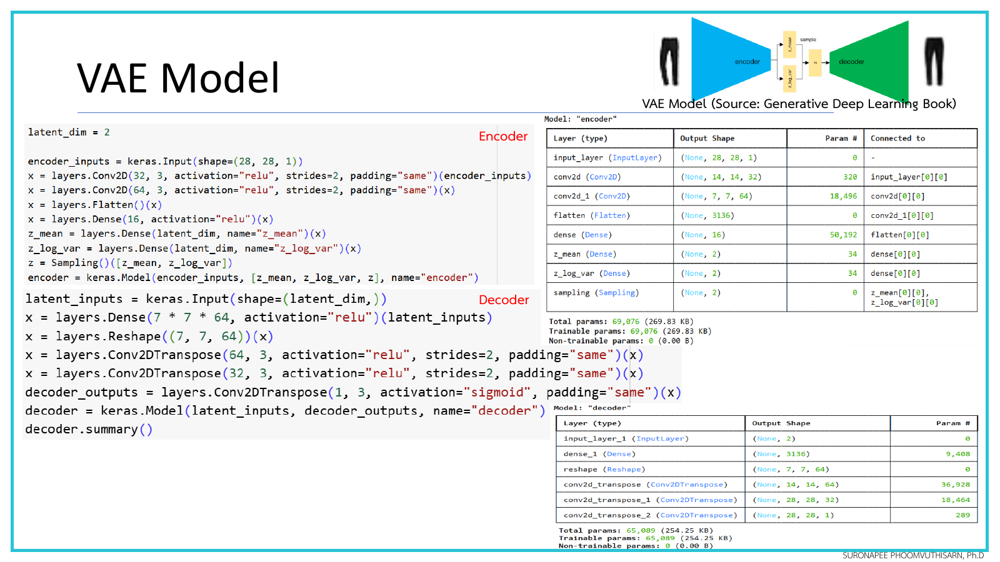
โค้ดแบ่งเป็นส่วน Encoder และ Decoder encoder ของ VAE เหมือน autoencoder จนถึง Flatten แล้วเพิ่ม Dense(16) หนึ่งชั้น ก่อนแยกเป็นสองหัว (z_mean และ z_log_var) และส่งเข้า Sampling encoder จึงคืนค่าสามตัว [z_mean, z_log_var, z]
| Layer | Output shape | Parameter |
|---|---|---|
| Conv2D(32) และ Conv2D(64) | (14,14,32) → (7,7,64) | 320 + 18,496 |
| Flatten → Dense(16, relu) | (3136) → (16) | 3136·16 + 16 = 50,192 |
| z_mean = Dense(2) | (2) | 16·2 + 2 = 34 |
| z_log_var = Dense(2) | (2) | 16·2 + 2 = 34 |
| Sampling | (2) | 0 |
| รวม encoder | 69,076 | |
decoder เหมือนของ autoencoder ต่างเพียงชั้นสุดท้ายใช้ Conv2DTranspose(1, 3, sigmoid) ที่ stride 1 แทน Conv2D parameter ยังเป็น 289 และรวมเป็น 65,089 เท่าเดิม
z_mean และ z_log_var เป็น Dense สองตัวแยกกันที่รับ input จาก layer เดียวกัน parameter จึงเท่ากัน (34 และ 34) ไม่ใช่ Dense(4) ตัวเดียว และ z_log_var ไม่มี activation เพราะต้องให้ค่าติดลบได้
ครูให้คะแนนการบ้านสองส่วน ส่วนแรกคือคำตอบถูกไหม ส่วนที่สองคือเขียนตามแบบฟอร์มที่กำหนดไหม ถ้าให้แต่คะแนนคำตอบ นักเรียนแต่ละคนจะเขียนแบบของตัวเองจนอ่านรวมกันไม่ได้
Cost (หรือ loss) ของ VAE มีสองส่วน
| ส่วน | ดันให้ encoder ทำอะไร | ในโค้ด |
|---|---|---|
| Reconstruction loss | สร้างรูปเดิมกลับให้ได้ (ตัวอย่างนี้ใช้ cross-entropy) | binary cross-entropy รวมทุกพิกเซล |
| Latent loss | ให้ latent ดูเหมือนสุ่มมาจาก Gaussian มาตรฐาน N(0, 1) วัดด้วย KL divergence ระหว่าง N(0, 1) กับการแจกแจงจริงของ latent | kl_loss |
ทุกมิติ i ของ latent ถูกลงโทษเมื่อ μ ห่างจาก 0 หรือเมื่อ σ ห่างจาก 1 แล้วนำค่าทุกมิติมารวมกัน
| L | latent loss |
| n | จำนวนมิติของ latent representation |
| \(\net{\mu_i}, \net{\sigma_i}\) | mean และ standard deviation ของมิติที่ i |
ต่อหนึ่งมิติ L = ½(σ² + μ² − 1 − log σ²) ถ้า μ = 0, σ = 1 ได้ ½(1 + 0 − 1 − 0) = 0 ซึ่งเป็นค่าต่ำสุด ถ้า μ = 2, σ = 1 ได้ ½(1 + 4 − 1 − 0) = 2 ถ้า μ = 0, σ = 0.5 ได้ ½(0.25 − 1 − log 0.25) = ½(−0.75 + 1.386) ≈ 0.32 ก้อนที่หดเล็กก็ถูกลงโทษ ไม่ใช่แค่ก้อนที่อยู่ไกล
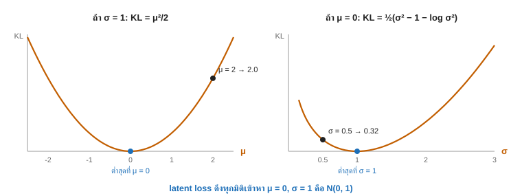
เส้นซ้ายคือ KL เมื่อตรึง σ = 1 แล้วเลื่อน μ ได้พาราโบลา μ²/2 เส้นขวาคือ KL เมื่อตรึง μ = 0 แล้วเปลี่ยน σ จุดต่ำสุดอยู่ที่ σ = 1 ทั้งสองเส้นจึงดึงทุกก้อนเข้ามาอยู่รอบ (0, 0) ด้วยความกว้างประมาณ 1 ก้อนจึงซ้อนกันและไม่มีช่องว่าง
เมื่อ minimize latent loss แล้ว latent จะมี การแจกแจงที่นิยามไว้ชัด คือ normal มาตรฐาน ตอนสร้างรูปใหม่จึงสุ่มจุดจาก N(0, 1) ได้เลย และจุดที่ได้มักอยู่ในบริเวณที่ VAE เคยเห็นตอน train
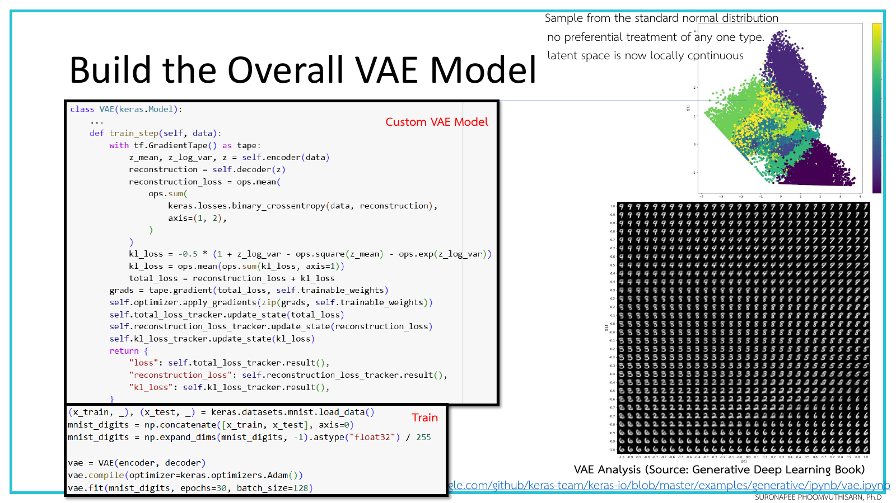
reconstruction_loss = ops.mean(ops.sum(
keras.losses.binary_crossentropy(data, reconstruction), axis=(1, 2)))
kl_loss = -0.5 * (1 + z_log_var - ops.square(z_mean) - ops.exp(z_log_var))
kl_loss = ops.mean(ops.sum(kl_loss, axis=1))
total_loss = reconstruction_loss + kl_losssum(..., axis=(1, 2)) | รวม cross-entropy ของทุกพิกเซลในรูป (แกนสูงและกว้าง) ได้ค่าเดียวต่อรูป แล้ว mean ข้าม batch |
-0.5 * (1 + z_log_var - square(z_mean) - exp(z_log_var)) | สูตร L ตรงตัว: z_log_var คือ log σ² และ exp(z_log_var) คือ σ² |
sum(kl_loss, axis=1) | รวมทุกมิติของ latent (Σ ในสูตร) แล้ว mean ข้าม batch |
tape.gradient(total_loss, self.trainable_weights) | หา gradient ของ loss รวมเทียบ weight ทั้ง encoder และ decoder แล้วให้ optimizer อัปเดต |
การ train เขียนเป็นคลาส VAE ที่ override train_step เพราะ loss ไม่ได้เทียบ output กับ label ตามปกติ ขั้น train ใช้ MNIST ทั้ง train และ test รวมกัน 70,000 รูป หาร 255 ให้พิกเซลอยู่ใน 0–1 แล้ว vae.fit(mnist_digits, epochs=30, batch_size=128) ไม่มี label เพราะ VAE ก็เป็น self-supervised
KL ต่ำสุดที่ σ = 1 ไม่ใช่ σ = 0 ข้อสอบอาจถามว่า latent loss ดัน σ ให้เป็นเท่าใด ถ้าตอบ 0 คือเข้าใจว่า KL ทำให้ทุกอย่างหดเป็นจุด ซึ่งตรงข้ามกับความจริง σ = 0 จะทำให้ VAE กลับไปเป็น autoencoder ธรรมดา และ −log σ² จะพุ่งเป็นอนันต์
มิติแรก ½(1 + 1 − 1 − 0) = 0.5 มิติที่สอง ½(1 + 0 − 1 − 0) = 0 รวม 0.5
VAE ต้นฉบับบวกสอง loss ตรงๆ ส่วน β-VAE คูณ KL ด้วยน้ำหนัก β เพื่อปรับสมดุล ต้องจูน β ให้ดี
| ถ้า | ผล |
|---|---|
| ให้น้ำหนัก reconstruction มากเกินไป | KL แทบไม่มีผล latent กลับไปมีปัญหาแบบ autoencoder ธรรมดา |
| ให้น้ำหนัก KL มากเกินไป | รูปที่ reconstruct ได้คุณภาพแย่ |
ตัวอย่างนี้มีไว้ให้เห็นว่า น้ำหนักของสอง loss เปลี่ยนหน้าตาของรูปที่สร้างได้ทั้งตาราง
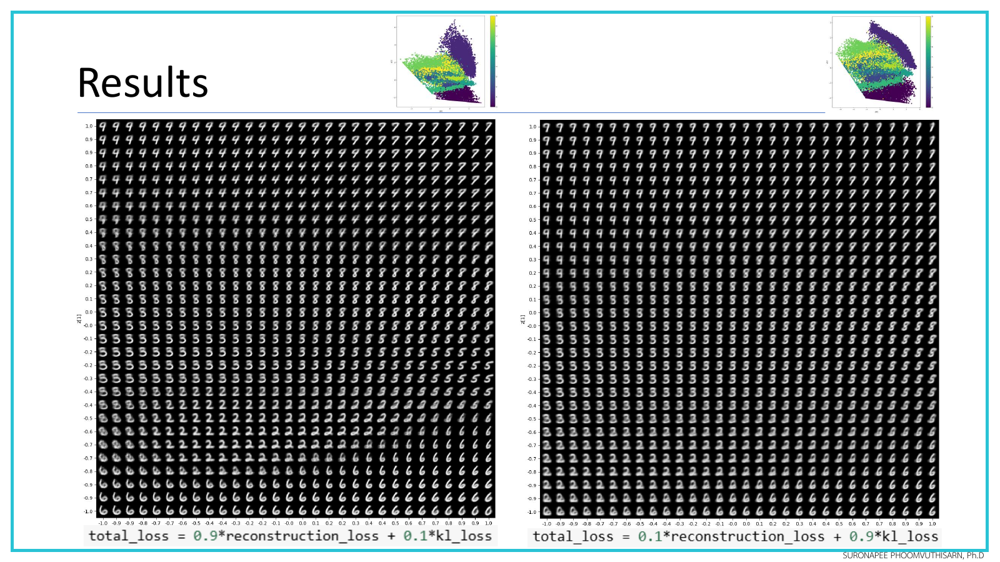
ทั้งสองตารางคือตัวเลขที่ decoder สร้างจากจุดที่เรียงเป็นตารางใน latent space ฝั่ง 0.9·reconstruction + 0.1·kl ตัวเลขคมกว่าและมีหลายแบบ (9, 4, 7, 8, 3, 5, 2, 6, 0) ฝั่ง 0.1·reconstruction + 0.9·kl ตัวเลขเบลอกว่าและหลายแถวกลายเป็นแบบเดียวกัน ตรงกับตาราง β ข้างบน
เมื่อสุ่มจุดจาก normal มาตรฐานแล้ว decode รูปที่ได้ไม่เอียงไปหาประเภทใดประเภทหนึ่ง และ latent space ต่อเนื่องเฉพาะที่ (locally continuous) คือเลื่อนจุดนิดเดียว รูปก็เปลี่ยนนิดเดียว
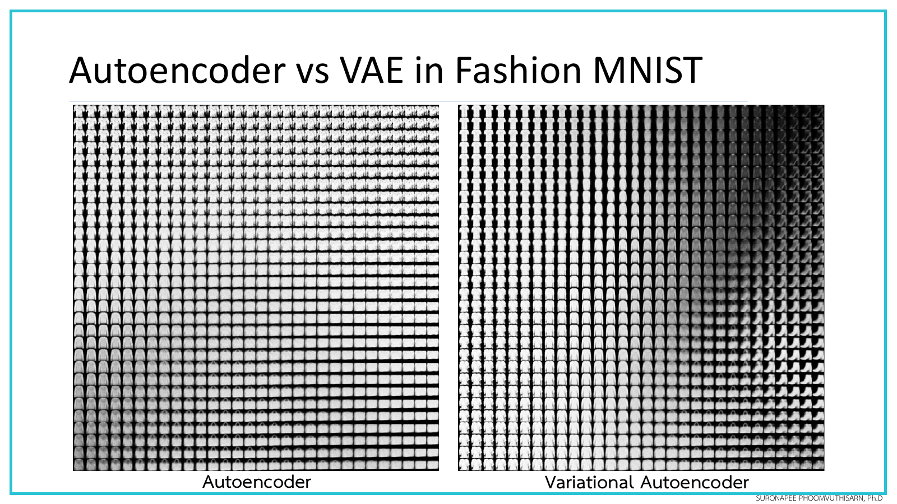
ตารางของ autoencoder เกือบทั้งตารางเป็นเสื้อกับกระเป๋า ประเภทอื่นแทบไม่โผล่ เพราะบางประเภทครองพื้นที่ latent กว้างกว่า ตารางของ VAE มีเสื้อยืด เสื้อแขนยาว กระเป๋า และรองเท้า และเปลี่ยนจากประเภทหนึ่งไปอีกประเภทหนึ่งทีละน้อย
| Autoencoder | VAE | |
|---|---|---|
| encoder ส่งออก | จุด z | μ และ log σ² แล้วสุ่ม z = μ + σε |
| loss | reconstruction | reconstruction + KL |
| latent space | มีช่องว่าง ไม่สมมาตร ไม่มีขอบเขต | ต่อเนื่อง อยู่รอบ (0, 0) ตาม N(0, 1) |
| สร้างรูปใหม่ | สุ่มจุดแล้วอาจได้รูปพัง | สุ่มจาก N(0, 1) แล้ว decode ได้ |
| รูปที่ได้ | คมเมื่อ reconstruct | เบลอกว่า |
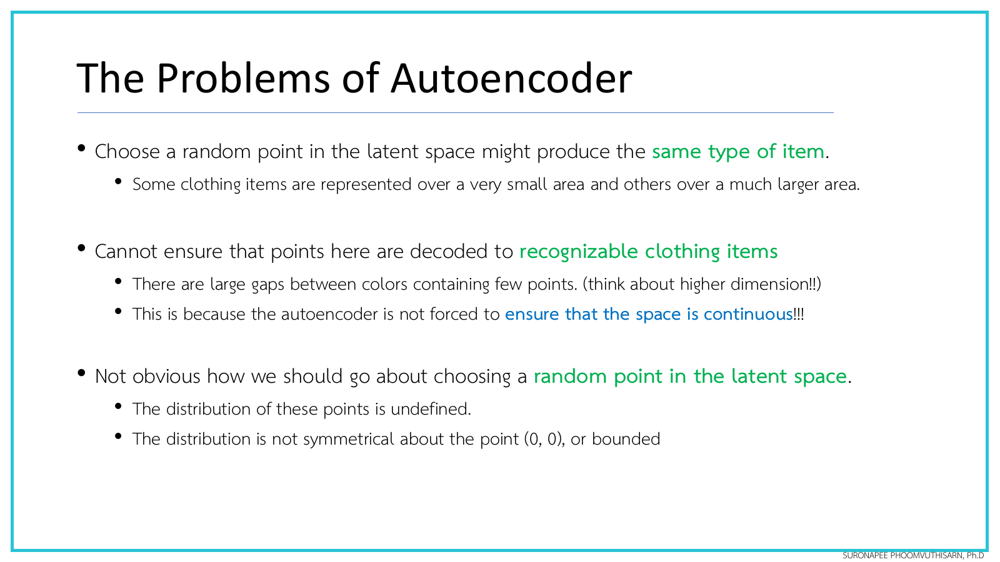
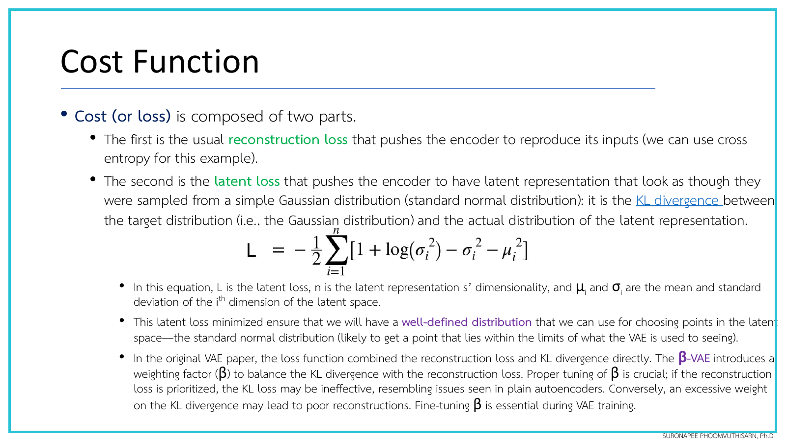
ช่างปลอมแบงก์มือใหม่ทำแบงก์ปลอมแย่มาก ตำรวจจับได้ทันที ช่างปลอมเลยปรับวิธี ตำรวจก็เรียนรู้จุดสังเกตใหม่ วนไปเรื่อยๆ จนแบงก์ปลอมแทบแยกไม่ออกจากของจริง
GAN (Goodfellow และคณะ, 2014) ทำให้ สร้าง รูปสังเคราะห์ที่ดูสมจริง ได้ โดยบังคับให้รูปที่สร้างแทบแยกไม่ออกจากรูปจริงในทางสถิติ ประกอบด้วยสอง network ที่แข่งกันตอน train แต่ละตัวถูกฝึกให้ชนะอีกตัว จนสุดท้ายเก่งทั้งคู่
| Network | เป้าหมาย | รับ → ให้ |
|---|---|---|
| Generator (ช่างปลอม) | หลอก discriminator ให้ได้ | random latent vector → รูป |
| Discriminator (ตำรวจ) | แยกรูปปลอมออกจากรูปจริง | รูป → ความน่าจะเป็นว่าเป็นรูปจริง |
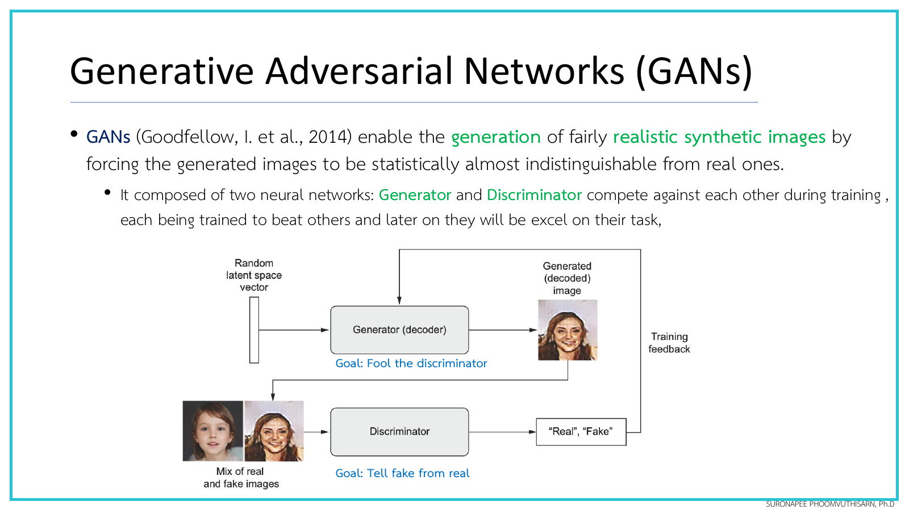
generator รับ latent vector แบบสุ่มแล้วสร้างรูป รูปปลอมผสมกับรูปจริงแล้วส่งให้ discriminator ตัดสินว่า "Real" หรือ "Fake" ผลการตัดสินย้อนกลับไปเป็น feedback ให้ generator ปรับตัว generator ทำหน้าที่เดียวกับ decoder ของ VAE คือแปลง latent เป็นรูป
DCGAN (Alec Radford และคณะ, 2016) ใช้ convolutional layer เป็นหลักในการสร้างทั้ง generator (G) และ discriminator (D) ต้องสร้างและฝึกสองโมเดล คือ (1) discriminator ตัวเดียว และ (2) อีกตัวสำหรับ generator
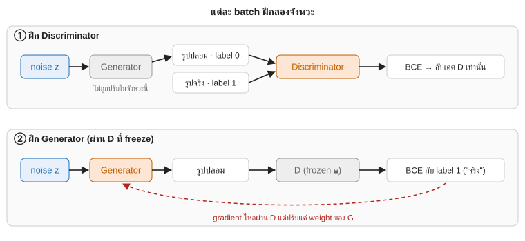
จังหวะ ① ฝึกเฉพาะ D ด้วยรูปปลอม (label 0) ผสมรูปจริง (label 1) จังหวะ ② ฝึก G โดยส่งรูปปลอมผ่าน D ที่ถูก freeze แล้วบอกว่า label คือ 1 gradient ต้องไหลผ่าน D จึงไปถึง G แต่ weight ของ D ไม่ถูกแตะ
| ฝึก | ความยาก | เพราะอะไร |
|---|---|---|
| Discriminator | ตรงไปตรงมา | เป็น binary classification ธรรมดา จำแนกรูปจริงกับปลอม output เป็น sigmoid |
| Generator | ยุ่งยากกว่าเล็กน้อย | ฝึกตัวเดียวแบบ D ไม่ได้ เพราะไม่มี label ของตัวเอง ต้องให้ D บอกว่าปลอมได้ดีหรือยัง |
สอง network สลับกัน ขัดเกลาฝีมือ เมื่อ generator เก่งขึ้น discriminator ก็ปรับตาม ความก้าวหน้าเกิดต่อเนื่องจนจบการ train แล้วจึงนำ generator ไปใช้ แผนภาพการฝึกบนสไลด์ ดัดแปลงมาจากหนังสือ Deep Learning for Vision Systems
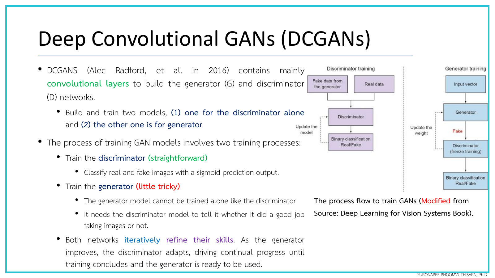
ฝั่ง discriminator training ข้อมูลปลอมจาก generator และข้อมูลจริงเข้า discriminator แล้ว update model จากผล binary classification ฝั่ง generator training input vector เข้า generator ได้รูปปลอม ส่งเข้า discriminator ที่ freeze training แล้วนำผลไป update weight ของ generator
Discriminator ถูกฝึกให้แยกรูปปลอมจาก generator ออกจากรูปจริงใน training set เป้าหมายคือทำนายว่ารูปจริงหรือปลอม (binary classification) ยิ่งนานไป discriminator ยิ่งจับของปลอมเก่ง generator จึงต้องเก่งขึ้นตามไปด้วย
ชุดข้อมูลที่ใช้ฝึกประกอบด้วยรูปจริงที่สุ่มมาจาก training set และรูปปลอมจาก generator ให้ label 1 กับรูปจริงและ label 0 กับรูปปลอม แล้วใช้ binary cross-entropy เป็น loss
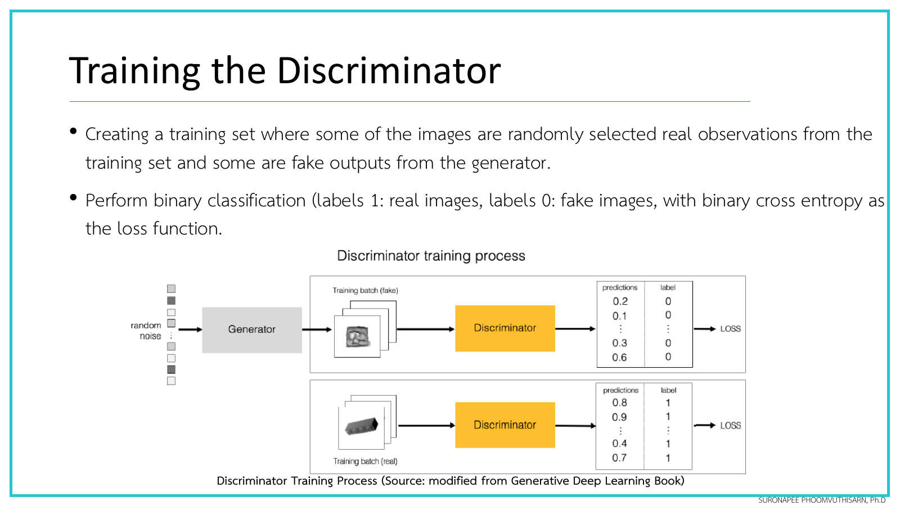
batch ปลอม discriminator ทำนาย 0.2, 0.1, 0.3, 0.6 ทั้งหมดมี label 0 ค่าที่ห่างจาก 0 มากที่สุดคือ 0.6 จึงถูกลงโทษมากที่สุด (−log(1 − 0.6) = −log 0.4 ≈ 0.92 เทียบกับ −log 0.8 ≈ 0.22 ของค่า 0.2) batch จริงทำนาย 0.8, 0.9, 0.4, 0.7 มี label 1 ค่า 0.4 ถูกลงโทษมากที่สุด
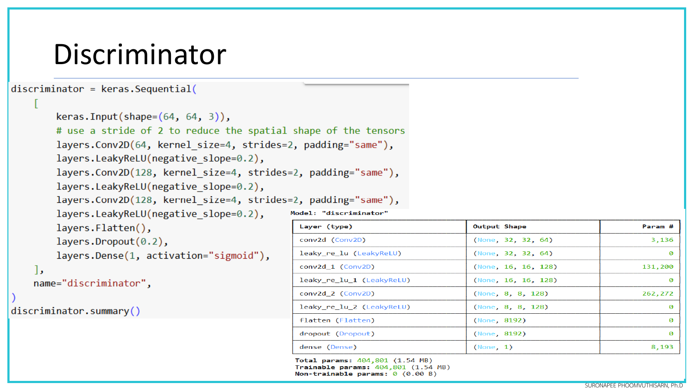
| Layer | Output shape | Parameter |
|---|---|---|
| Conv2D(64, 4, strides=2) | (32, 32, 64) | (4·4·3 + 1)·64 = 3,136 |
| Conv2D(128, 4, strides=2) | (16, 16, 128) | (4·4·64 + 1)·128 = 131,200 |
| Conv2D(128, 4, strides=2) | (8, 8, 128) | (4·4·128 + 1)·128 = 262,272 |
| Flatten → Dropout(0.2) | (8192) | 0 |
| Dense(1, sigmoid) | (1) | 8192 + 1 = 8,193 |
| รวม | 404,801 | |
LeakyReLU(negative_slope=0.2) และ Dropout ไม่มี parameter ที่เรียนได้ และ discriminator ลดขนาดด้วย strides=2 ไม่ได้ใช้ MaxPooling (64 → 32 → 16 → 8) output เป็น Dense(1, sigmoid) ค่าเดียวคือความน่าจะเป็นว่าเป็นรูปจริง
Generator รับข้อมูลสุ่มแล้วพยายามเลียนแบบ training set เพื่อสร้างรูปปลอม เป้าหมายคือหลอก discriminator ด้วยรูปที่เหมือนรูปใน training set ที่สุด ฝึกไปทุกรอบก็เก่งขึ้น generator ไม่เคยเห็นรูปจาก training set โดยตรง สิ่งที่มันรู้เกี่ยวกับรูปจริงมาจาก discriminator ทั้งหมด และ generator (หรือ decoder) คือ ConvNet กลับหัว จาก vector ที่มี noise ไปเป็นรูป
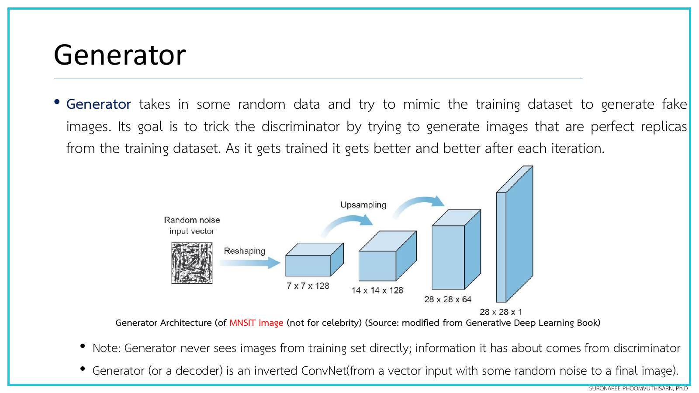
แผนภาพนี้เป็น generator สำหรับ รูป MNIST (สไลด์พิมพ์ว่า MNSIT) ไม่ใช่สำหรับรูปดารา shape เปลี่ยนจาก 7×7×128 → 14×14×128 → 28×28×64 → 28×28×1
วิธีฝึก generator คือ สร้าง network รวม ที่มีทั้ง G และ D อยู่ด้วยกัน ส่ง batch รูปปลอมผ่าน D เพื่อเอาคะแนนแต่ละรูป แล้ว freeze weight ของ discriminator เพราะจังหวะนี้ฝึกเฉพาะ generator loss ของ generator คือ binary cross-entropy ระหว่าง ความน่าจะเป็นเหล่านี้กับเวกเตอร์ที่เป็น 1 ทั้งหมด เพราะต้องการให้ generator สร้างรูปที่ discriminator คิดว่าเป็นของจริง
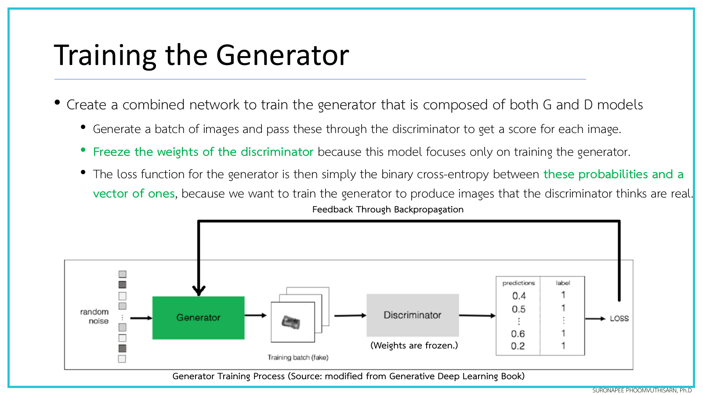
D ให้คะแนนรูปปลอม 0.4, 0.5, 0.6, 0.2 label ทั้งหมดเป็น 1 รูปที่ได้ 0.2 ถูกลงโทษมากที่สุด (−log 0.2 ≈ 1.61) gradient จึงดัน G ให้แก้รูปแบบนี้มากที่สุด ถ้า D ให้ 0.9 ทุกรูป loss ของ G จะต่ำ แปลว่า G หลอก D ได้แล้ว
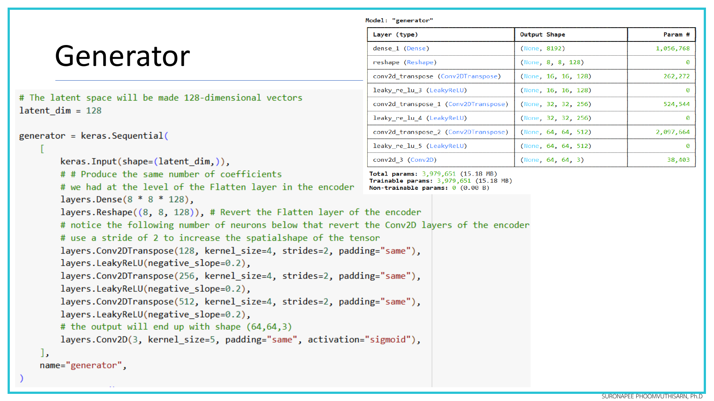
| Layer | Output shape | Parameter |
|---|---|---|
| Dense(8·8·128) | (8192) | 128·8192 + 8192 = 1,056,768 |
| Reshape | (8, 8, 128) | 0 |
| Conv2DTranspose(128, 4, strides=2) | (16, 16, 128) | (4·4·128 + 1)·128 = 262,272 |
| Conv2DTranspose(256, 4, strides=2) | (32, 32, 256) | (4·4·128 + 1)·256 = 524,544 |
| Conv2DTranspose(512, 4, strides=2) | (64, 64, 512) | (4·4·256 + 1)·512 = 2,097,664 |
| Conv2D(3, 5, sigmoid) | (64, 64, 3) | (5·5·512 + 1)·3 = 38,403 |
| รวม | 3,979,651 | |
generator ใหญ่กว่า discriminator เกือบ 10 เท่า (3,979,651 เทียบกับ 404,801) ส่วนใหญ่มาจาก Conv2DTranspose(512) และ generator ขยายด้วย strides=2 (8 → 16 → 32 → 64) ชั้นสุดท้ายเป็น Conv2D(3) เพื่อให้ได้ 3 channel RGB และใช้ sigmoid เพราะพิกเซลอยู่ใน 0–1
เมื่อเข้าใจสองโมเดลแยกกันแล้ว นำมารวมเป็น GAN แบบ end-to-end แต่ละรอบทำ 6 ขั้น
| ขั้น | ทำอะไร | ฝึกใคร |
|---|---|---|
| 1 | สุ่มจุดใน latent space (random noise) | D |
| 2 | ให้ generator สร้างรูปจาก noise นี้ | |
| 3 | ผสมรูปที่สร้างกับรูปจริง | |
| 4 | ฝึก discriminator ด้วยรูปผสม target คือ "real" สำหรับรูปจริง และ "fake" สำหรับรูปที่สร้าง | |
| 5 | สุ่มจุดใหม่ใน latent space | G |
| 6 | ฝึก generator ด้วย vector สุ่มเหล่านี้ target ทั้งหมดบอกว่า "นี่คือรูปจริง" weight ของ generator จึงขยับไปทางที่ทำให้ discriminator ทายว่ารูปปลอมเป็นรูปจริง |
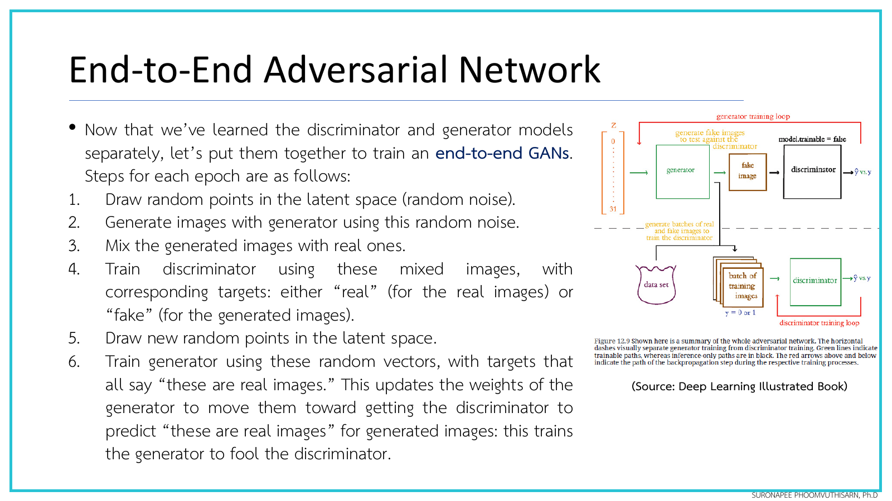
ขั้น 1–4 คือจังหวะ ① และขั้น 5–6 คือจังหวะ ② ในรูปสองจังหวะข้างบน ขั้น 5 สุ่ม noise ชุดใหม่ ไม่ใช้ชุดเดิมจากขั้น 1
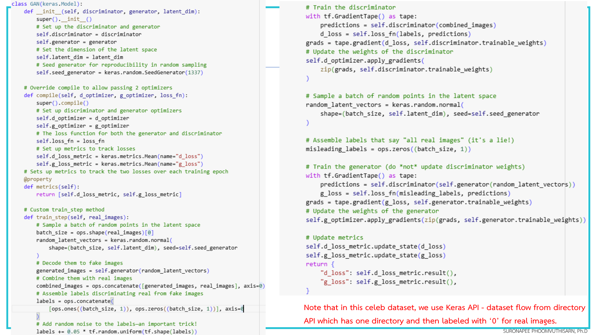
generated_images = self.generator(random_latent_vectors)
combined_images = ops.concatenate([generated_images, real_images], axis=0)
labels = ops.concatenate([ops.ones((batch_size, 1)), ops.zeros((batch_size, 1))], axis=0)
labels += 0.05 * tf.random.uniform(tf.shape(labels)) # important trick
# train D: grads only for self.discriminator.trainable_weights
misleading_labels = ops.zeros((batch_size, 1)) # "all real images" (a lie)
predictions = self.discriminator(self.generator(random_latent_vectors))
g_loss = self.loss_fn(misleading_labels, predictions)
grads = tape.gradient(g_loss, self.generator.trainable_weights)compile(d_optimizer, g_optimizer, loss_fn) | GAN มีสอง optimizer แยกกัน หนึ่งตัวต่อหนึ่ง network และใช้ loss_fn ตัวเดียวกัน (binary cross-entropy) |
labels = concat([ones, zeros]) | รูปที่สร้าง (มาก่อนใน concat) ได้ 1 รูปจริงได้ 0 กลับด้านจากสไลด์หน้า 23 |
labels += 0.05 * uniform | บวก noise เล็กน้อยกับ label เป็นทริกที่ทำให้ D ไม่มั่นใจเกินไป การฝึกจึงนิ่งขึ้น |
tape.gradient(d_loss, discriminator.trainable_weights) | ขั้นฝึก D หา gradient เฉพาะ weight ของ D |
misleading_labels = zeros | ในโค้ดนี้ 0 แปลว่า "จริง" label ศูนย์ทั้งหมดจึงคือคำโกหกว่ารูปปลอมเป็นรูปจริง |
tape.gradient(g_loss, generator.trainable_weights) | ขั้นฝึก G หา gradient เฉพาะ weight ของ G นี่คือการ "freeze" D ในโค้ด: D อยู่ในเส้นทางคำนวณแต่ไม่ถูกอัปเดต |
ในโค้ดนี้ label กลับด้านจากสไลด์ทฤษฎี: dataset ดาราโหลดด้วย Keras API แบบ flow from directory ที่มีโฟลเดอร์เดียว จึงติด label ‘0’ ให้รูปจริง ถ้าข้อสอบถามว่า misleading_labels เป็นศูนย์ทั้งหมดเพราะอะไร คำตอบคือ 0 หมายถึง "จริง" ในโค้ดนี้ หลักการไม่เปลี่ยน: label ของ G คือ label เดียวกับรูปจริงเสมอ
เปลี่ยนเป็น ops.ones((batch_size, 1)) เพราะ generator ต้องการให้ D ตอบว่า "จริง" ซึ่งตอนนี้คือ 1
ตัวอย่างนี้มีไว้ให้เห็นว่า GAN ค่อยๆ สร้างหน้าคนที่ดูออกได้ ต้องใช้หลาย epoch
dataset CelebA มีหน้าดารา 200,000 รูป ย่อเป็น 64 × 64 เพื่อให้ train เร็วขึ้น discriminator แปลงรูป (64, 64, 3) เป็นคะแนนว่าจริงแค่ไหน ฝึกด้วยรูปจริงและปลอมพร้อม label เหมือน image classification ทั่วไป generator แปลง vector shape (latent_dim,) เป็นรูป (64, 64, 3) และฝึกด้วย gradient ของ weight generator เทียบกับ loss ของโมเดล gan ทั้งตัว
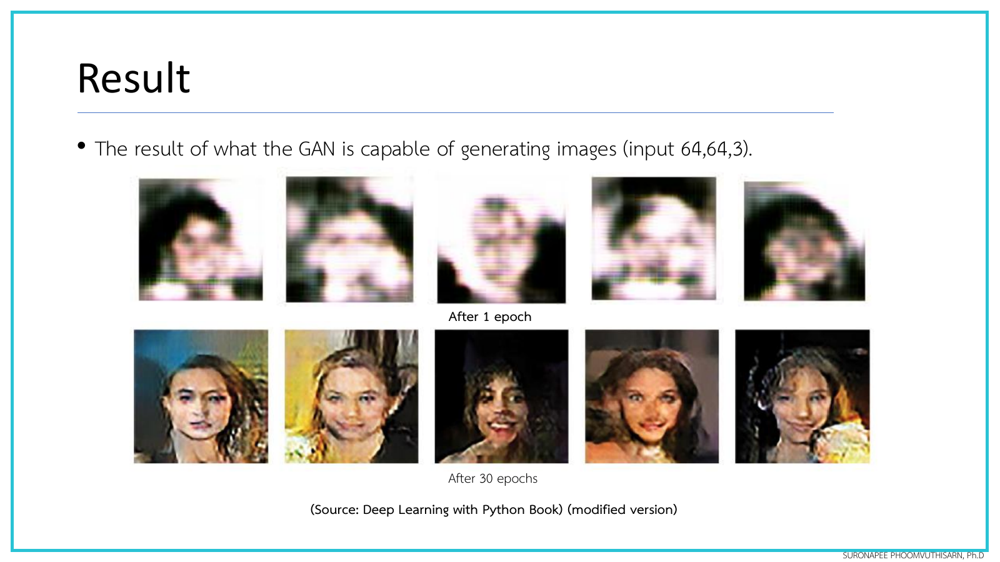
หลัง 1 epoch รูปเป็นเพียงก้อนสีเบลอที่พอเห็นตำแหน่งหน้า หลัง 30 epoch เห็นตา จมูก ปาก และทรงผมชัด แต่บางรูปยังมีส่วนบิดเบี้ยว
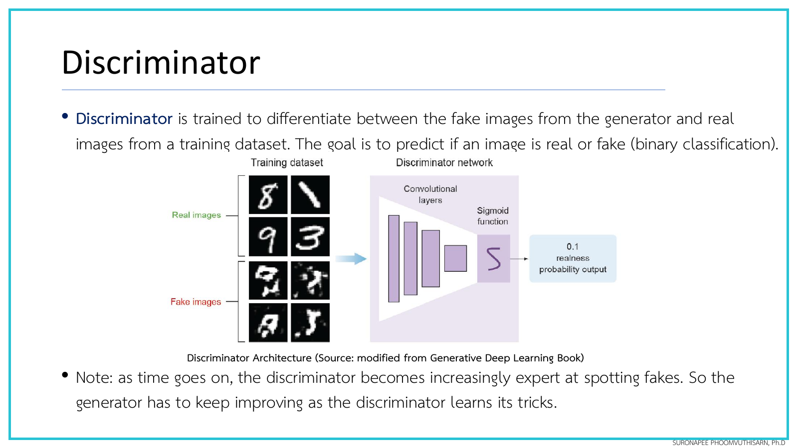
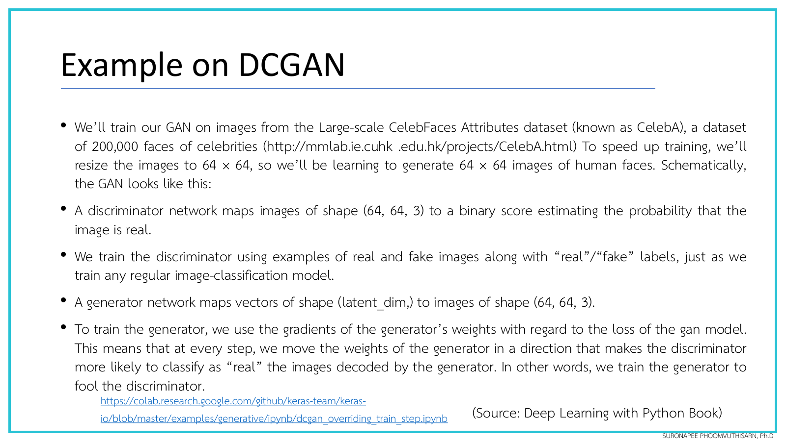
GAN ฝึกยากอย่างขึ้นชื่อ ต้องจูนทั้งสถาปัตยกรรมและค่าการฝึกอย่างละเอียด ปัญหามีสี่แบบ
| ปัญหา | เกิดอะไรขึ้น |
|---|---|
| Discriminator เก่งเกิน generator | D แยกได้ง่ายเกินไป สัญญาณจาก loss อ่อนเกินจะช่วยให้ G พัฒนา |
| Generator เก่งเกิน discriminator | D อ่อนเกินไป G หลอกได้ด้วยรูปไม่กี่แบบที่เกือบเหมือนกัน เรียกว่า mode collapse (รูปที่สร้างหลากหลายน้อยลงเรื่อยๆ) |
| Loss ไม่บอกอะไร | G ถูกวัดเทียบกับ D ปัจจุบันซึ่งเก่งขึ้นตลอด loss ต่างเวลาจึงเทียบกันไม่ได้ |
| Hyperparameter | ไวต่อการเปลี่ยนค่าเพียงเล็กน้อย หาค่าที่ใช้ได้ด้วยการลองผิดลองถูกอย่างมีหลัก ไม่มีแนวทางสำเร็จรูป |
ช่วงหลังมี GAN อีกหลายแบบที่ปรับโครงสร้าง GAN ต้นฉบับเพื่อแก้ปัญหาเหล่านี้
mode collapse เกิดตอน generator ชนะ ไม่ใช่ discriminator ชนะ ถ้า discriminator ชนะ ผลคือ generator ไม่พัฒนาเพราะ gradient อ่อน
G และ D ถูกฝึกพร้อมกันเพื่อรักษาสมดุล จึงไม่มี objective loss ที่ใช้วัดคุณภาพของ generator ได้ ดูจาก loss อย่างเดียวไม่รู้ทั้งความก้าวหน้าและคุณภาพของโมเดล วิธีที่ใช้คือดู คุณภาพของรูปสังเคราะห์ที่สร้างได้ ด้วยตาคน หรือใช้ตัวชี้วัดคุณภาพและความหลากหลายของรูป
| ตัวชี้วัด | ดีเมื่อ |
|---|---|
| Inception score | ยิ่งสูงยิ่งดี |
| Fréchet inception distance (FID) | ยิ่งต่ำยิ่งดี (เป็นระยะห่างจากรูปจริง) |
ยังไม่มีข้อตกลงว่าวิธีวัด GAN ที่ถูกต้องคืออะไร และยังเป็นหัวข้อวิจัยอยู่
จำทิศของสองตัวชี้วัดให้แม่น FID เป็น "distance" จึงยิ่งน้อยยิ่งใกล้รูปจริง ส่วน inception score เป็น "score" จึงยิ่งมากยิ่งดี
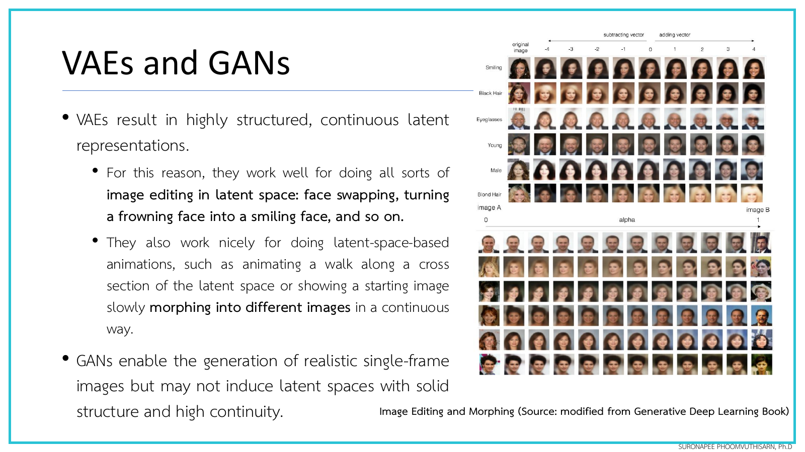
VAE ให้ latent ที่มีโครงสร้างและต่อเนื่อง จึงเหมาะกับการแก้ไขรูปใน latent space เช่น บวก "เวกเตอร์ยิ้ม" ให้หน้าบึ้งกลายเป็นหน้ายิ้ม หรือเปลี่ยนหน้า A เป็นหน้า B ทีละน้อย ส่วน GAN สร้างรูปเดี่ยวที่สมจริงกว่า แต่ latent อาจไม่มีโครงสร้างและไม่ต่อเนื่อง
| VAE | GAN | |
|---|---|---|
| latent space | มีโครงสร้าง ต่อเนื่องสูง | อาจไม่มีโครงสร้างที่ชัด ความต่อเนื่องต่ำกว่า |
| เก่งเรื่อง | แก้ไขรูปใน latent space (สลับหน้า ทำหน้าบึ้งให้ยิ้ม) และทำแอนิเมชันที่รูปค่อยๆ เปลี่ยน | สร้างรูปเดี่ยวที่สมจริง |
| loss | reconstruction + KL | binary cross-entropy แบบแข่งกัน |
| ฝึก | เสถียร loss ลดลงชัดเจน | ยาก loss บอกความก้าวหน้าไม่ได้ |
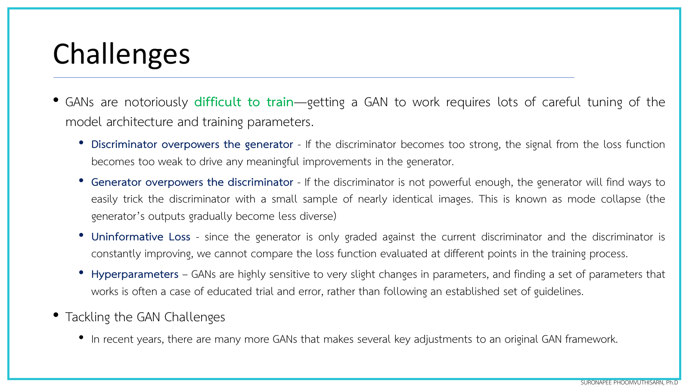
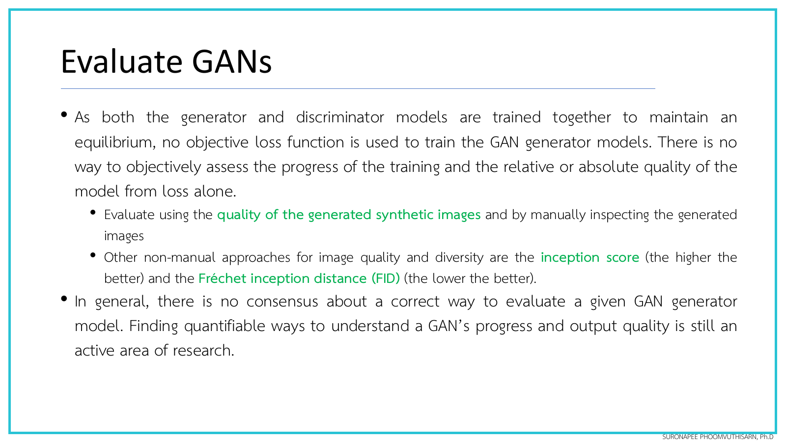
ลองฝึกต่อในแบบฝึก Lesson 13 หรืออ่านต่อ Lesson 14 — Diffusion Models และ Stable Diffusion
| หน้า | เนื้อหา | อยู่ในตอน |
|---|---|---|
| 1 | ปก part5: Generative Models | etc — ปก |
| 2 | Agenda | ตอน 1 (แกลเลอรี) |
| 3–5 | Generative Models, More Examples, Image Generation | ตอน 1 |
| 6–11 | Autoencoders, Fashion MNIST, Encoder, Decoder, Analysis, Problems of Autoencoder | ตอน 2 |
| 12–18 | VAE, Sampling Layer, VAE Model, Cost Function, Build VAE, Results, AE vs VAE | ตอน 3 |
| 19 | Agenda (ครึ่งหลัง) | ตอน 1 (แกลเลอรี) |
| 20–31 | GANs, DCGANs, Discriminator, Generator, End-to-End, โค้ด GAN, CelebA, Result | ตอน 4 |
| 32–34 | Challenges, Evaluate GANs, VAEs and GANs | ตอน 5 |
| 35 | Convolutional Transpose Layers | ตอน 2.3 |
แหล่งอื่นที่ใช้: ไม่มี เนื้อหาทั้งหมดมาจากสไลด์ Lecture 13 (deep_learning_part5_1.pdf) ตัวเลข parameter ทุกตัวคิดซ้ำด้วยมือและตรงกับ summary บนสไลด์